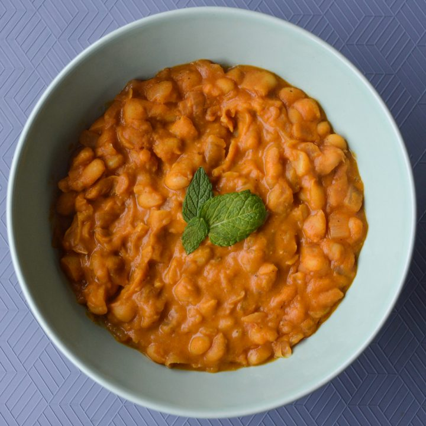

tavce gravce

description
from wikipedia: "Tavče gravče is a traditional Macedonian dish. It is prepared with fresh beans and can be found in many restaurants in North Macedonia. It is also commonly eaten by the Macedonian diaspora. This meal is baked and served in a traditional unglazed earthenware pot."
ingredients
- 4 cups northern beans, cleaned
- 3 tablespoons canola oil
- 2 large onions
- 2 dried whole chili peppers
- 1 tablespoon salt
- chopped parsely
for the roux
- a half cup of oil
- 2 tablespoons paprika
directions
- place the beans in a 5-quart pot and cover with water about 2 inches above the beans
- pour in the oil.
- add in quartered onions and dried chili peppers
- cook the beans over medium-high heat until soft, about 1.5 to 2 hours
- stir often and add warm water as it evaporates. you are looking for a stw-like consistency
- onces the beans are cooked, do not remove from heat and start to prepare the roux
- slightly heat the oil in a fryin pan over medium heat
- stir in the paprika and keep stirring until just thoroughly combined and fragrant
- pour the roux into the pot with the beans and stir
- mix in a tablespoon of salt and continue to boil for 2 to 3 minutes
- remove from heat
- preheat oven to 400
- carefully pour the beans into a large casserole dish, add enough water to just cover the beans
- place the sliced rounds of onions and the cooked chili peppers on top as garnish
- add salt and pepper to taste
- bake the beans for 30 minutes, or until a crusty layer forms on top of the beans
- remove and let cool 15 minutes before serving
- add chopped parsley for garnish
recipe taken from here